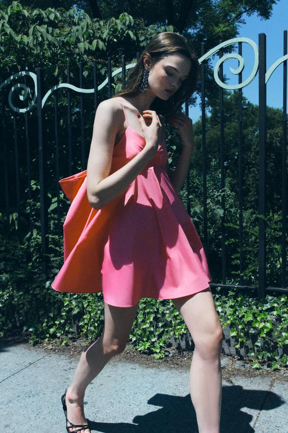
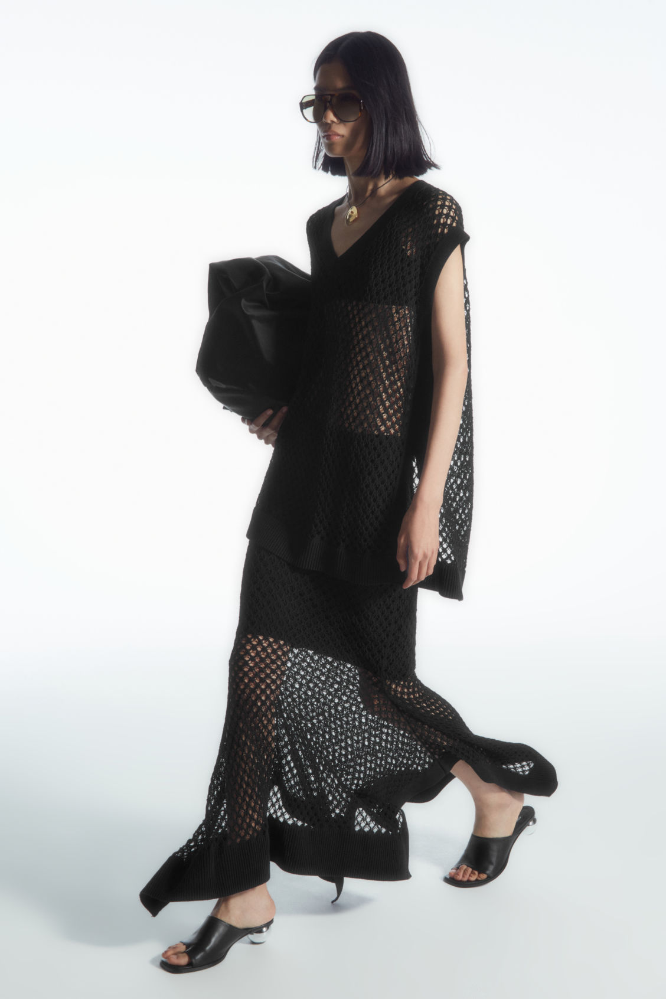

Tendencias de moda, que deves de llevar esta temporada de verano 2024. Las mejores tendencias, los mejores consejos y lo ultimo de la moda

10 vestidos cortos (y tendencia) que piden sandalias planas

El verano (y la moda) pertenece a estas prendas de crochet